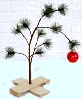
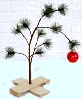

|
|

|
|
| No. 16 WINTER 2006/07 | $ YOUR SOUL |
|
|
|
|
|
 The world is a much more danger-ous place now that the twins have turned fifteen! "Weston and I got our permits yesterday!!!" says an ecstatic Dallas." We are driving up to Coquille today - a three hour drive - and it's our first time driving!" You have been warned! Those who value life would do well to avoid I-5 Northbound on the 28th of January!
The world is a much more danger-ous place now that the twins have turned fifteen! "Weston and I got our permits yesterday!!!" says an ecstatic Dallas." We are driving up to Coquille today - a three hour drive - and it's our first time driving!" You have been warned! Those who value life would do well to avoid I-5 Northbound on the 28th of January!
 Poor little pooches! As if it weren't enough that the Johnson's dogs have had their tails docked, their ears clipped and their reproduction organs surgically removed - now it looks as if the'll be going under the knife again to have their voice boxes removed. Michael Jackson watch out, these dogs may pass you up!
Poor little pooches! As if it weren't enough that the Johnson's dogs have had their tails docked, their ears clipped and their reproduction organs surgically removed - now it looks as if the'll be going under the knife again to have their voice boxes removed. Michael Jackson watch out, these dogs may pass you up!
Wins Again Progress Report
 Anarchy abounds in the Cluff chicken coop - it's every hen for herself now! It all started with the death of one of the oldest chickens in the coop. She died in a cold-snap which sparked off a spate of violent protests over inadequate conditions. But instead of things getting better, the violence led to the eventual deaths of two more hens. One particularly bad example of the carnage was the ritualistic murder of a small, defenseless Bantam - gangster style. The poor Bantam was pecked to within an inch of her life and then, in a shocking and devilish frenzy, EATEN ALIVE by the other members of the coop! When it was all over, only her legs remained! After that the coop went quiet. It remains to be seen what happens next.
Anarchy abounds in the Cluff chicken coop - it's every hen for herself now! It all started with the death of one of the oldest chickens in the coop. She died in a cold-snap which sparked off a spate of violent protests over inadequate conditions. But instead of things getting better, the violence led to the eventual deaths of two more hens. One particularly bad example of the carnage was the ritualistic murder of a small, defenseless Bantam - gangster style. The poor Bantam was pecked to within an inch of her life and then, in a shocking and devilish frenzy, EATEN ALIVE by the other members of the coop! When it was all over, only her legs remained! After that the coop went quiet. It remains to be seen what happens next.
 Got a problem or a question? The Cluff Family Times' lifestyle guru can solve all of your personal, romantic, financial, spiritual, decorating and fashion dilemmas. The answers are only a click away. Do you have a question for our agony aunt? Send it to: info@tuffcluff.com Got a problem or a question? The Cluff Family Times' lifestyle guru can solve all of your personal, romantic, financial, spiritual, decorating and fashion dilemmas. The answers are only a click away. Do you have a question for our agony aunt? Send it to: info@tuffcluff.com
|
Original Plans vs. What Actually Happened  This year Cluffs the world over gathered for a very special holiday reunion - then ran away screaming in horror! It was the first time in seven years that all 33 Cluffs would be together in one place. Diana was determined that it would be memorable. For months she worked on a game-plan with a range of activities and events to suit anyone and everyone. Unfortunately the only thing that ended up going to plan was the "memorable" bit - but not for the reasons she had originally intended! This year Cluffs the world over gathered for a very special holiday reunion - then ran away screaming in horror! It was the first time in seven years that all 33 Cluffs would be together in one place. Diana was determined that it would be memorable. For months she worked on a game-plan with a range of activities and events to suit anyone and everyone. Unfortunately the only thing that ended up going to plan was the "memorable" bit - but not for the reasons she had originally intended! ACTIVITIES Original Plans: "Make gingerbread houses, popcorn balls and fudge, have a taffy pull, watch Christmas movies, play games, dance, do the Family Yell, Great Wrestlers of America, watch home movies, act out The Christmas Story with costumes etc..." What Actually Happened: Everyone vomited. DANCING Original Plans: "Cotton Eye Joe Dance, Chicken Dance, Jeremy teach the boys to breakdance, Israeli Dance, Pig Dance, Irish Dance, women do Dance of the Veils to wild Middle-Eastern music, Limbo, Mexican shakers with costumes to music and Teen Dance. Music can be fast, Beach Boys, 50’S, Hooked on Classics, Lord of the Dance, etc..." What Actually Happened: Too sick to move. Everyone threw up instead. TALENTS Original Plans: "Dane’s Family Band, Air Band (adult men as famous rock singers jumping and sliding on knees with microphone, guitars etc), play Indian drums, comedians with microphone and a set of clean jokes and Bad Hair Day (youth with wild hair)" What Actually Happened: Everyone tossed their cookies. SNOW PARTY Original Plans: "Go play at the snow with big thermoses of homemade chili and hot chocolate." What Actually Happened: Only the kids had enough energy to go skiing. The rest stayed home and blew chunks. FAMILY PICTURES Original Plans: "We looked good in our TuffCluff picture as cowboys, so a theme for one of the family pictures might be good again. What about dressing like Cavemen or Middle Eastern people? Take pictures outdoors with green as background" What Actually Happened: It was raining like cats and dogs so everyone had to run for cover in the nasty barn. Everyone's hair was ruined and several children were actively vomiting during the photo shoot. Costumes were vetoed since it was hard enough to find something to wear that hadn't been vomited on. So many people were sick during the shoot that it had to be cut short and we never did end up getting a picture with every head visible. CATCH UP WITH RELATIVES Original Plans: "Invite Grandparents and relatives to a big dance and party." What Actually Happened: No one dared enter the "quarantine" house. FOOD Original Plans: "Dad’s biscuits and gravy, hot dog roast, autumn stew, lentils or split peas with carrots, potato soup, beans on toast (the English way), homemade bread, filled baked potatoes, tapioca pudding, sub-sandwiches, yogurt shakes, grilled cheese sandwiches, sherbet milkshakes, coleslaw, potato salad, fudgesicle, scones, fried rice, steam vegetables, Spanish rice, beans, tacos, burritos, chips, spaghetti, garlic bread, green salad, ham, turkey, dressing, cranberries, yams, fruit salad, rolls, green beans, olives, deep-dish apple pie and ice cream." What Actually Happened: Nobody could hold anything down. There was Pacific Lime Mold everywhere! CHRISTMAS DAY Original Plans: Santa visits children with his sack to deliver gifts, exchange white elephants wrapped in tin foil, Christmas dinner and family holds hands around Christmas tree and sings festive songs. What Actually Happened: Everyone barfed.
Thanks to Dane & Karen's family for starting this. If you have a good one to add, we'd love to hear it. Send it in today!  A good Cluff is always on the lookout for that perfect white elephant. If you haven't been able to find anything in the barn yet this year why not try Stupid.com or Wonderfullywacky.com - two great one-stop-shops for all your pale pachydermal needs. But don't forget that a true Cluff white elephant is either free or very, very cheap - so don't spend too much.
A good Cluff is always on the lookout for that perfect white elephant. If you haven't been able to find anything in the barn yet this year why not try Stupid.com or Wonderfullywacky.com - two great one-stop-shops for all your pale pachydermal needs. But don't forget that a true Cluff white elephant is either free or very, very cheap - so don't spend too much.
 Winter is a time for the family to gather close together, to share old memories and make new ones. Cuddle up on the couch with your family this season and share some of your favorite, childhood movie moments. Then recoil in horror as they dis 'It's A Wonderful Life' just because it's black and white. Kids these days!
Winter is a time for the family to gather close together, to share old memories and make new ones. Cuddle up on the couch with your family this season and share some of your favorite, childhood movie moments. Then recoil in horror as they dis 'It's A Wonderful Life' just because it's black and white. Kids these days! DECEMBER: Have a retro Christmas with the kids this year by watching all the old, nostalgic stuff they used to show on TV every year: Dr. Seuss's How the Grinch Stole Christmas (1966), A Charlie Brown Christmas (1965), Frosty the Snowman (1969), Rudolph, the Red-Nosed Reindeer (1964), Mickey's Christmas Carol (1984), Mr. Krueger's Christmas (1980), The Gift of Love: A Christmas Story (1983), The Muppet Christmas Carol (1992), etc...JANUARY: It's January. You're feeling fat from the Christmas excesses, you're feeling depressed because you've already broken your New Years resolutions and you're feeling cold because it's the dead of winter. You think you have it bad? Spare a thought for the poor Cheyenne Indians in Windwalker (1980) who were sometimes so hungry that they would even eat meat that was pre-chewed by a six year old, who's minor problems included being killed/kidnapped by the Crow every time the left the teepee and who had to kill a bear and make a coat if they wanted to get warm in the snow. Force your family to appreciate how great they've got it by making them watch this film. We had to! FEBRUARY: For Valentines Day this year check out the rom-com that has it all; Fencing, fighting, torture, revenge, giants, monsters, chases, escapes, true love, miracles... It's The Princess Bride (1987) of course! Who could resist the charms of this nearly-perfect chick flick? WILDCARD: This winter our wildcard is movie is Ma and Pa Kettle (1949). It's a bit hit and miss but still fun to re-watch if only to remember the fits of laughter Mom and Dad used to get into as they watched. |
 In a shocking blow, Weston has just discovered that he is not actually the person he thought he was. After 15 years of living a lie he accidentally stumbled upon an earth shattering secret that had been kept from him since birth; that his name is not Weston but actually WesTEN! "I completely forgot until we looked at his birth certificate," begins Weston/en's elderly mother, Diana, "that I had actually decided to spell his name with an "en" instead of an "on" because he was my tenth child and I wanted his name to say that." Weston/en was understandable distraught when he discovered the truth and was even the subject of intense sympathy at school for a few weeks where he was dubbed a poor, neglected child. Not one to wallow in self-pity, Weston/en has picked himself up from this tragedy and moved on, albeit with a new, rebellious spirit - he has refused to spell his name with an "e", despite it being "illegal" to do otherwise. Let's just hope that case sensitive agencies such as the DMV appreciate the complexities behind his name being one letter off. Somehow I doubt it!
In a shocking blow, Weston has just discovered that he is not actually the person he thought he was. After 15 years of living a lie he accidentally stumbled upon an earth shattering secret that had been kept from him since birth; that his name is not Weston but actually WesTEN! "I completely forgot until we looked at his birth certificate," begins Weston/en's elderly mother, Diana, "that I had actually decided to spell his name with an "en" instead of an "on" because he was my tenth child and I wanted his name to say that." Weston/en was understandable distraught when he discovered the truth and was even the subject of intense sympathy at school for a few weeks where he was dubbed a poor, neglected child. Not one to wallow in self-pity, Weston/en has picked himself up from this tragedy and moved on, albeit with a new, rebellious spirit - he has refused to spell his name with an "e", despite it being "illegal" to do otherwise. Let's just hope that case sensitive agencies such as the DMV appreciate the complexities behind his name being one letter off. Somehow I doubt it!
 The Cluffs have had their fair share of goats. There was 'Wigglesword' the earless neurotic, Hansel & Gretel the playful pygmies, Porthos, Athos and Aramis the three pygmateers and a Nubian mother and three kids which no one can remember the names of because there have been so many! This February, yet another goat came into the Cluff's life. It all started when Diana got a call from a neighbor complaining that the Cluff's goat was running amuck in their yard. Diana was perplexed, they hadn't owned a goat in years. When another neighbor called to say they heard the Cluff's goat was up on the runway at the airport and the police were involved, Diana got curious. The police were having a lot of trouble catching the goat so she volunteered the twins to help. The boys jumped at the chance and were climbing through blackberry bushes and jumping into the partially frozen creek in wild pursuit of the pesky goat. Eventually they cornered the wily beast and won the admiration of the weary policemen. After the goat was secured the police confessed that they didn't know what to do with it. Diana swiftly jumped at the chance for a free lawnmower. She suggested tethering it near the road in front of their house so that it would be visible to anyone driving by looking for it. If no one claimed it, she would keep it. They police handed it over. The Cluffs built a shelter and gave it food but within hours the goat had escaped again. The police were called out again, and again enlisted the twins help in recapturing the cunning creature. This time when it was caught the Cluffs bought a special collar and chain to keep it firmly in place. But within hours the goat had broken free and was on the move again. The police came out again and called the twins again. This went on and on. The goat was found up at Ashland Hills Inn, by the A & W, near the freeway, next to the church and so on until finally the police refused to deal with the goat anymore. They said they had better things to do in Ashland than catch goats. We all know THAT is a lie. The goat kept this up until eventually its wild spree was ended when it broke its leg. It spent some time convalescing in the Tobiasson's field where it was spotted by its owner. A week later Dennis was attending a local meeting when he overheard a big group discussing the wild exploits of the legendary goat that evaded capture. Dennis stepped in to give a first hand account of the events and became the man of the hour. The whole experience has reaffirmed what Dennis has always felt about goats. "I was through with goats 15 years ago when Wigglesword escaped and ate all the bark off our fruit trees. I’ll never have a goat again!" But Diana hasn't been put off the idea of having a goat at all, "I like how useful they are," she says. "You have a lawnmower, milk and meat all in one animal. I’d like to have a whole herd" Let’s just hope the local police don’t get wind of Diana’s plan!
The Cluffs have had their fair share of goats. There was 'Wigglesword' the earless neurotic, Hansel & Gretel the playful pygmies, Porthos, Athos and Aramis the three pygmateers and a Nubian mother and three kids which no one can remember the names of because there have been so many! This February, yet another goat came into the Cluff's life. It all started when Diana got a call from a neighbor complaining that the Cluff's goat was running amuck in their yard. Diana was perplexed, they hadn't owned a goat in years. When another neighbor called to say they heard the Cluff's goat was up on the runway at the airport and the police were involved, Diana got curious. The police were having a lot of trouble catching the goat so she volunteered the twins to help. The boys jumped at the chance and were climbing through blackberry bushes and jumping into the partially frozen creek in wild pursuit of the pesky goat. Eventually they cornered the wily beast and won the admiration of the weary policemen. After the goat was secured the police confessed that they didn't know what to do with it. Diana swiftly jumped at the chance for a free lawnmower. She suggested tethering it near the road in front of their house so that it would be visible to anyone driving by looking for it. If no one claimed it, she would keep it. They police handed it over. The Cluffs built a shelter and gave it food but within hours the goat had escaped again. The police were called out again, and again enlisted the twins help in recapturing the cunning creature. This time when it was caught the Cluffs bought a special collar and chain to keep it firmly in place. But within hours the goat had broken free and was on the move again. The police came out again and called the twins again. This went on and on. The goat was found up at Ashland Hills Inn, by the A & W, near the freeway, next to the church and so on until finally the police refused to deal with the goat anymore. They said they had better things to do in Ashland than catch goats. We all know THAT is a lie. The goat kept this up until eventually its wild spree was ended when it broke its leg. It spent some time convalescing in the Tobiasson's field where it was spotted by its owner. A week later Dennis was attending a local meeting when he overheard a big group discussing the wild exploits of the legendary goat that evaded capture. Dennis stepped in to give a first hand account of the events and became the man of the hour. The whole experience has reaffirmed what Dennis has always felt about goats. "I was through with goats 15 years ago when Wigglesword escaped and ate all the bark off our fruit trees. I’ll never have a goat again!" But Diana hasn't been put off the idea of having a goat at all, "I like how useful they are," she says. "You have a lawnmower, milk and meat all in one animal. I’d like to have a whole herd" Let’s just hope the local police don’t get wind of Diana’s plan!  In a fantastic feat, Diana reports that she got through Matthew, Mark, Luke, John, The Acts, Revelations, The Book of Mormon, The Doctrine and Covenants and The Pearl of Great Price - all in just 11 days! Here she reveals the two secrets she used to achieve such success. 1) Multi-Tasking: She listened to CDs while she did her chores then read when she had breaks. 2) Zig-Zag Reading: Amazingly, she has taught herself to speed read by zig-zagging down a page so that it takes only a faction of the amount of time it would normally. Armed with only these two secret weapons she's confident that she is scriptural top dog and challenges anyone to try to beat her. "Reading scriptures is more than a hobby for me," she says. "It makes me so happy that I feel like I just got a nice present or went on a really good vacation or had a nice, clean shower."
In a fantastic feat, Diana reports that she got through Matthew, Mark, Luke, John, The Acts, Revelations, The Book of Mormon, The Doctrine and Covenants and The Pearl of Great Price - all in just 11 days! Here she reveals the two secrets she used to achieve such success. 1) Multi-Tasking: She listened to CDs while she did her chores then read when she had breaks. 2) Zig-Zag Reading: Amazingly, she has taught herself to speed read by zig-zagging down a page so that it takes only a faction of the amount of time it would normally. Armed with only these two secret weapons she's confident that she is scriptural top dog and challenges anyone to try to beat her. "Reading scriptures is more than a hobby for me," she says. "It makes me so happy that I feel like I just got a nice present or went on a really good vacation or had a nice, clean shower."
 Ammon decided to hold a blood drive for his Eagle Project. He enlisted a big group of volunteers and organized the whole thing but he didn't count on one little thing...his project being rejected! Apparently they didn't like it because there weren't enough Scouts involved!! But Ammon, being an honorable young man, didn't want to back out on all the people who had signed up so he went ahead with it all anyway (even though it didn't officially count). Ammon is currently on the lookout for another project. Watch this column to see how it turns out. The twins have now officially turned in their Eagle Project papers as well. Dallas wants to plant a flag pole on the front lawn of the church and Weston wants to build an archery range at Esther Applegate. Good luck boys! Soren, who attends scouts regularly, enjoys the outdoor adventures most but doesn't get to do them as much as he'd like. This is because scouting in the South is very different to scouting in the West (ie: Southern Scouts use motorhomes rather than tents on campouts!) If your scouter hasn't been mentioned in this article, it's because you're not sending in any info. Scouting Pics
Ammon decided to hold a blood drive for his Eagle Project. He enlisted a big group of volunteers and organized the whole thing but he didn't count on one little thing...his project being rejected! Apparently they didn't like it because there weren't enough Scouts involved!! But Ammon, being an honorable young man, didn't want to back out on all the people who had signed up so he went ahead with it all anyway (even though it didn't officially count). Ammon is currently on the lookout for another project. Watch this column to see how it turns out. The twins have now officially turned in their Eagle Project papers as well. Dallas wants to plant a flag pole on the front lawn of the church and Weston wants to build an archery range at Esther Applegate. Good luck boys! Soren, who attends scouts regularly, enjoys the outdoor adventures most but doesn't get to do them as much as he'd like. This is because scouting in the South is very different to scouting in the West (ie: Southern Scouts use motorhomes rather than tents on campouts!) If your scouter hasn't been mentioned in this article, it's because you're not sending in any info. Scouting Pics
 Here, wedged between 'Lifestyles' and 'Bizarre-o World', Diana imparts some of her experience and wisdom to help with everyday problems. Here, wedged between 'Lifestyles' and 'Bizarre-o World', Diana imparts some of her experience and wisdom to help with everyday problems.
The Return of The Wet Bed  During Christmas break, Dakota, age 11, was the only person willing to take Diana up on her invitation to sleep outside. It was a chilly night but things seemed to go alright, that is, until morning broke and they woke up in a pool wetness. At first Dakota worried that Grandma had finally lost all bladder control and had wet all over him in the night. Then he was struck by the sudden realization that it might be him! He was horrified. That hadn't happened in years! But he was soaked to the bone so it must have been him. He quietly crept away to avoid the blame but then sheepishly slunk back to apologize when his conscience got the better of him. Grandma was good about it and they decided to clean up the mess together. But as they changed the bedding they realized that something was wrong. After a smell-test they determined that it was actually Diana's fault after all! Not that she had wet the bed but that she had forgotten to mend the hole in the plastic sheeting that she used as protection in case of rain. And it had rained - hard. Dakota breathed a big sigh of relief then ran off to play, leaving Diana to do all the laundry!
During Christmas break, Dakota, age 11, was the only person willing to take Diana up on her invitation to sleep outside. It was a chilly night but things seemed to go alright, that is, until morning broke and they woke up in a pool wetness. At first Dakota worried that Grandma had finally lost all bladder control and had wet all over him in the night. Then he was struck by the sudden realization that it might be him! He was horrified. That hadn't happened in years! But he was soaked to the bone so it must have been him. He quietly crept away to avoid the blame but then sheepishly slunk back to apologize when his conscience got the better of him. Grandma was good about it and they decided to clean up the mess together. But as they changed the bedding they realized that something was wrong. After a smell-test they determined that it was actually Diana's fault after all! Not that she had wet the bed but that she had forgotten to mend the hole in the plastic sheeting that she used as protection in case of rain. And it had rained - hard. Dakota breathed a big sigh of relief then ran off to play, leaving Diana to do all the laundry!
|

|
|
Your CLUFFDAQ share price goes up one point for each Tuffcluff News article your team appears in. Given that the bulk of this newspaper is based on family emails and Skype calls, the best way to improve your stock is to write/share interesting information. You can either write an article yourself or hope that someone thinks you're cool enough to write a story about you. So get going, good luck and may the best team win. |
| Parental Team (Dennis & Diana) |
 9 points 9 points
|
$65.00 |
| The Cluffers (Dane & Karen's Family) |
5 points
|
$29.00 |
| Team Beal (Melanie & Scott's Family) |
5 points
|
$19.00 |
| Nat's Gang (Natasha & Steve's Family) |
3 points
|
$13.00 |
| Team Pip Pip & Tally Ho! (Daisha & Edward's Family) |
4 points
|
$16.00 |
| The Redecorators (Tiana & Hyrum's Family) |
3 points
|
$19.00 |
| The Cullenators(Shira & Jeremy's Family) |
2 point
|
$4.00 |
| The Lone Rebel (Nial) |
2 points
|
$21.00 |
| Twin Terrors (Dallas & Weston) |
6 points
|
$37.00 |
 THIS QUARTER? THIS QUARTER?No One CLICK HERE for the next issue of the Cluff Family Times |